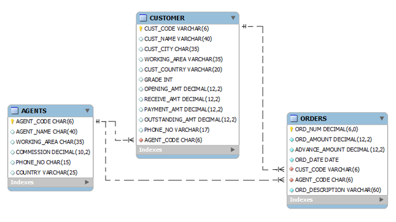

Rattrapage
Partie 1 Exemple Personne
- Cette partie (non notée) sert d'exemple afin de pouvoir réaliser la partie 2 (notée). Il est très vivement conseillé de la réaliser. Elle permet une meilleure réalisation de la suite. Les instructions de 1 à 4 suivantes ont déjà été réalisées afin de vous aider. Commencer par le 5)
1) Créer un controller ConsoleController dédié à la console associant l'adresse /console à la redirection vers h2-console
2) Créer un controller MainController permettant de gerer les appels sur nos repository retournant les objets en JSON
- Voici les paramètres à utiliser pour les deux prochaines méthode:
@RequestParam(name = "method", required = true, defaultValue = "id") String method, @RequestParam(name = "value", required = true) String valuechaque méthode devra avoir un switch prenant en entréemethod
3) Associer l'adresse /person avec les méthodes retournant qu'une valeur (dans le switch)
4) Associer l'adresse /persons avec les méthodes retournant une liste (dans le switch)
5) Acceder à la console et créer une querry permettant d'afficher toutes les personnes commençant par S
6) Créer une nouvelle méthode dans le PersonRepository findNameStartingByS et y mapper la query obtenue précédemment sachant que dans le code ce n'est pas les tables et champs de la BDD qu'il faut utiliser mais ceux de l'Entity
7) Refaire la même query en language naturel (uniquement en java) Doc spring
8) Créer deux autres query de type different de la première
Partie 2 Vraie BDD
- Créer les
EntityAgent, Orders, Customersuivant le schéma ci dessous et la déclaration des tables. Pour le moment considerer les clés étrangères comme des champs simples. Elles seront utilisées dans la partie 3. 
CREATE TABLE "AGENTS"
(
"AGENT_CODE" CHAR(6) NOT NULL PRIMARY KEY,
"AGENT_NAME" CHAR(40),
"WORKING_AREA" CHAR(35),
"COMMISSION" NUMBER(10,2),
"PHONE_NO" CHAR(15),
"COUNTRY" VARCHAR2(25)
);
CREATE TABLE "CUSTOMER"
(
"CUST_CODE" VARCHAR2(6) NOT NULL PRIMARY KEY,
"CUST_NAME" VARCHAR2(40) NOT NULL,
"CUST_CITY" CHAR(35),
"WORKING_AREA" VARCHAR2(35) NOT NULL,
"CUST_COUNTRY" VARCHAR2(20) NOT NULL,
"GRADE" NUMBER,
"OPENING_AMT" NUMBER(12,2) NOT NULL,
"RECEIVE_AMT" NUMBER(12,2) NOT NULL,
"PAYMENT_AMT" NUMBER(12,2) NOT NULL,
"OUTSTANDING_AMT" NUMBER(12,2) NOT NULL,
"PHONE_NO" VARCHAR2(17) NOT NULL,
"AGENT_CODE" CHAR(6) NOT NULL REFERENCES AGENTS
);
CREATE TABLE "ORDERS"
(
"ORD_NUM" NUMBER(6,0) NOT NULL PRIMARY KEY,
"ORD_AMOUNT" NUMBER(12,2) NOT NULL,
"ADVANCE_AMOUNT" NUMBER(12,2) NOT NULL,
"ORD_DATE" DATE NOT NULL,
"CUST_CODE" VARCHAR2(6) NOT NULL REFERENCES CUSTOMER,
"AGENT_CODE" CHAR(6) NOT NULL REFERENCES AGENTS,
"ORD_DESCRIPTION" VARCHAR2(60) NOT NULL
);
-
Charger les données de dépot Github dataTP2 soit manuellement soit automatiquement.
-
Créer les repository associés et ajouter des méthodes pour:
1) Trouver des agents par nom, trouver des agents à la commission plus petite que la valeur en paramètre, trouver des agents par COUNTRY
2) Trouver des customers par nom, Trouver des customers par ville et Trouver des customers par
openingAtmplus petit que le paramètre3) Trouver des orders par agent code et Trouver des orders par orderAmount plus petit que le paramètre
-
Créer des requètes de jointure pour chaque order récupérer les valeurs associées d'agent et customer
-
Dans le controller y ajouter les méthodes de la même façon que pour les personnes et y binder toutes les méthodes.
Partie 3 Optimisations
-
Commenter l'annotation
@columnpour les clés externes et rajouter@ManyToOne @JoinColumn( name="nom de la colonne", unique=false, nullable=false, updatable=true)et remplacer le type du champ par l'objet voulu. -
Afficher la liste des orders. Que constatez vous? Ecrire la réponse en commentaire après la ligne
public class ExoBddDaoApplication {
Fin
Supprimer le dossier target, zipper le projet de me l'envoyer pr mail. Vérifier l'envoi du mail (pas de mail de retour à cause de la pièce jointe)